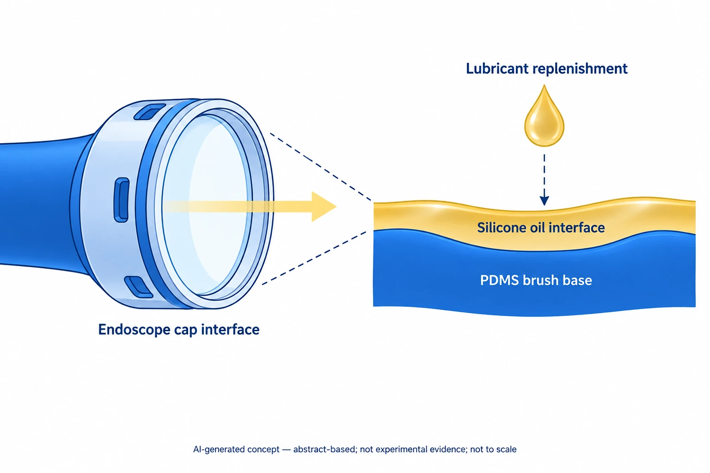

이 연구가 다루는 문제
일회용 내시경 캡에 고분자 브러시와 실리콘오일 계면을 만들어 김 서림과 혈액·점액 오염으로 시야가 가려지는 문제를 다룹니다. 이 소개는 초록과 보충자료의 반복 오염 시험과 윤활유 보충 결과를 바탕으로 하며, 이 자료만으로 환자에서의 효과를 판단할 수는 없습니다.
연구가 시작된 배경
내시경은 김 서림이나 혈액·점액의 부착으로 시야가 가려질 수 있습니다. 이 연구는 이러한 오염을 줄이기 위한 일회용 캡을 다룹니다.
어떻게 접근했나요?
PDMS 브러시와 실리콘 오일로 보충 가능한 윤활 계면을 만듭니다. 확인한 초록이 설명하는 표면 설계이며, 함께 제시한 개념도는 실제 기기 구조를 재현한 그림이 아닙니다.

공개 초록을 바탕으로 만든 AI 생성 개념도입니다. SHIELD-C의 PDMS 브러시·실리콘 오일 계면과 윤활액 보충을 설명합니다. 캡 외형과 색띠는 기능을 나타내며 실제 형상, 실험 영상, 임상 결과가 아닙니다.
이 개념도의 근거는 출판사가 Crossref에 등록한 초록입니다. 화살표는 광 경로와 보충 개념이며 측정된 투과량, 시야 회복, 자동 공급을 뜻하지 않습니다. 장착 부품, 브러시의 분자 배열, 층 두께, 보충 절차를 재현하지 않습니다.
논문 원그림을 복제한 이미지가 아니며, 원그림 재사용 허가를 의미하지 않습니다.
무엇을 어떻게 평가했나요?
공개 보충자료에는 젖음, 반복 담금, 세포, 용혈 시험이 포함됩니다. 생체 외 실험의 상세 본문 방법은 읽지 않았으므로 해당 결과의 해석 범위에는 제한이 있습니다.
주요 결과
대표 이미지에서는 혈액에 100회 담근 뒤에도 시야가 유지됩니다. 다만 Figure S14C의 축과 범례 방향이 충돌해 그 패널의 수치를 신뢰성 있게 해석하기 어렵습니다.
아직 남아 있는 질문
보충자료의 일부 pH, 접촉각·미끄럼각, 유체 표기도 서로 맞지 않습니다. 보충·멸균·노화 결과만으로 장기 내구성이나 환자 안전성을 판단할 수는 없습니다.
함께 읽을 연구
A bioinspired omniphobic surface coating on medical devices prevents thrombosis and biofouling
두 연구 모두 액체 계면을 유지해 오염 부착에 저항합니다. SHIELD-C는 이를 보충 가능한 캡과 내시경 시야 문제에 적용합니다.
혈관의 혈전 결과로 내시경의 김 서림이나 점액에 대한 성능을 판단할 수는 없습니다.
초록을 참고한 소개RESEARCH NEWS
연구 소식
해설에 사용한 자료
이 해설은 출판사가 Crossref에 등록한 초록과 공식 보충 PDF am6c04312_si_002.pdf의 S1–S20쪽 텍스트, Figures S1–S16, Tables S1/S2를 바탕으로 합니다. 상세 본문 Methods와 별도 보충영상은 읽지 않았으며, 원자료와 재현성도 검토하지 않았습니다. 이는 해설의 근거 범위이며 논문의 전체 실험 범위를 뜻하지는 않습니다.